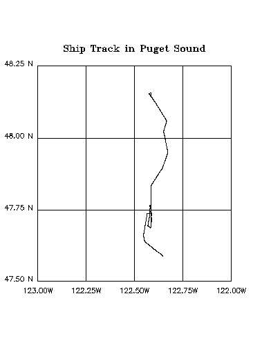

FAQ
PLOT/VS with map projections
PLOT/VS with map projections
Question:
All I want to do is plot a ship track with a particular map projection.
Example:

Explanation:
The mp_line.jnl script shouldonly be used to overlay a line plot on top of a SHADE,FILL or CONTOUR plot. When run by itself, without the /OVER qualifier,it does not work as expected.
An easy way to create a blank underlay for the mp_linescript is to shade data from one of the etopo datasets with variousqualifiers so that you end up with a blank plot.
Solution:
The plot above shows a ship track in Puget Sound, Washington.The script to create it is given below and is commented with severaltricks we used to get the plot just right.
! How to draw a ship track in a map projection. ! ! This script uses map projection scripts to get the ! correct aspect ratio for a ship track in Puget Sound. set win/size=.2 ! We'll need to create an underlay with some dataset. use etopo60 set region/x=237.0:238.0/y=47.4N:48.25N ! The region of interest is smaller then the grid size ! of etopo60 so we'll need to regrid it to higher ! resolution. define axis/x=237.0:238.0:0.01/units=degree x_ax define axis/y=47.4:48.25:0.01/units=degree y_ax define grid/x=x_ax/y=y_ax map_grid ! Set the grid as required by the map projection scripts set grid map_grid go mp_grid map_grid ! Now issue the map projection commands go mp_mercator go mp_aspect ! Create our blank underlay shade/noaxis/pal=white/nokey/nolabs rose[g=map_grid], x_page, y_page ! Get the ship track lat and lon file/var="ship_lat,ship_lon" mp_ship_track.dat ! Ferret hates negative numbers so convert these longitudes ! (in the range -123:-122) to be greater than zero. let new_lon = 360 + ship_lon ! Plot the ship track go mp_line plot/vs/line/noaxis/nolab/over new_lon,ship_lat ! Note that we defined the axis and the region to have ! a lower latitude of 47.4. This is to make sure that ! the bottom graticule line of 47.5 is drawn. go mp_graticule 237.0 238.0 0.25 47.5 48.25 0.25 go mp_label 236.9 47.50 0 0 .15 "@AS47.50 N" go mp_label 236.9 47.75 0 0 .15 "@AS47.75 N" go mp_label 236.9 48.00 0 0 .15 "@AS48.00 N" go mp_label 236.9 48.25 0 0 .15 "@AS48.25 N" go mp_label 237.00 47.46 0 0 .15 "@AS123.00W" go mp_label 237.25 47.46 0 0 .15 "@AS122.25W" go mp_label 237.50 47.46 0 0 .15 "@AS122.50W" go mp_label 237.75 47.46 0 0 .15 "@AS122.75W" go mp_label 238.00 47.46 0 0 .15 "@AS122.00W" go mp_label 237.50 48.30 0 0 .2 "@TRShip Track in Puget Sound"